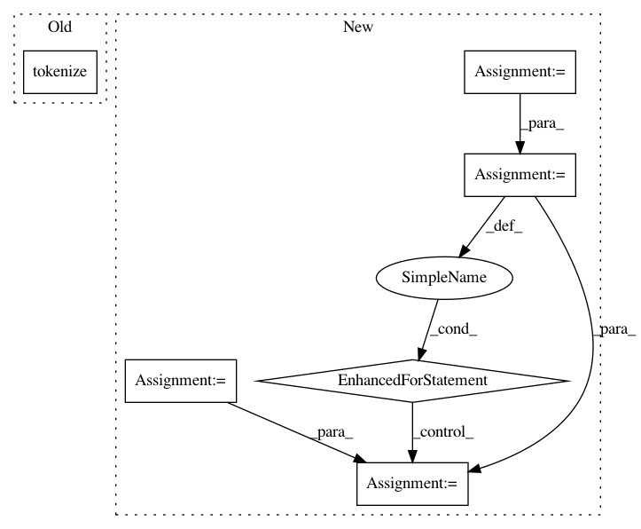

875a33806acea37f602d0ad20fb77cd42432bbb6,scripts/tokenize/tokenize_pad.py,,,#,6
Before Change
rcParams["debug"]=True
wl = Wordlist("pad_data_qlc.qlc")
wl.tokenize("pad_orthography_profile")
wl.output("qlc", filename="tokenized-pad_data")
After Change
rc(debug=True)
// make sure the pad data is in this directory
infile = codecs.open("pad_data_qlc.qlc", "r", "utf-8")
header = infile.readline() // skip pad header
t = Tokenizer("pad_orthography_profile")
print()
print("ID"+"\t"+"ORIGINAL"+"\t"+"RULES")
for line in infile:
line = line.strip()
tokens = line.split("\t")
id = tokens[0]
counterpart = tokens[2]
grapheme_clusters =t.grapheme_clusters(counterpart)
rules = t.rules(grapheme_clusters)
print(id+"\t"+counterpart+"\t"+rules)
// this tokenize does not work because of the way the orthography rules are currently written, i.e.
// they expect space delimited tokens; the wordlist.tokenize() function first apples the rules
// and the the Unicode grapheme cluster tokenization
In pattern: SUPERPATTERN
Frequency: 3
Non-data size: 6
Instances
Project Name: lingpy/lingpy
Commit Name: 875a33806acea37f602d0ad20fb77cd42432bbb6
Time: 2013-11-08
Author: bambooforest@gmail.com
File Name: scripts/tokenize/tokenize_pad.py
Class Name:
Method Name:
Project Name: kermitt2/delft
Commit Name: b445c177a4543617c843f24943bb00e69ab24b36
Time: 2018-05-02
Author: patrice.lopez@science-miner.com
File Name: sequenceLabelling/tokenizer.py
Class Name:
Method Name: tokenizeAndFilter
Project Name: WZBSocialScienceCenter/tmtoolkit
Commit Name: d1196006be574c16473df6efed448f9fa308a680
Time: 2019-03-06
Author: markus.konrad@wzb.eu
File Name: tests/test_preprocess.py
Class Name:
Method Name: test_tmpreproc_en_transform_tokens_lambda